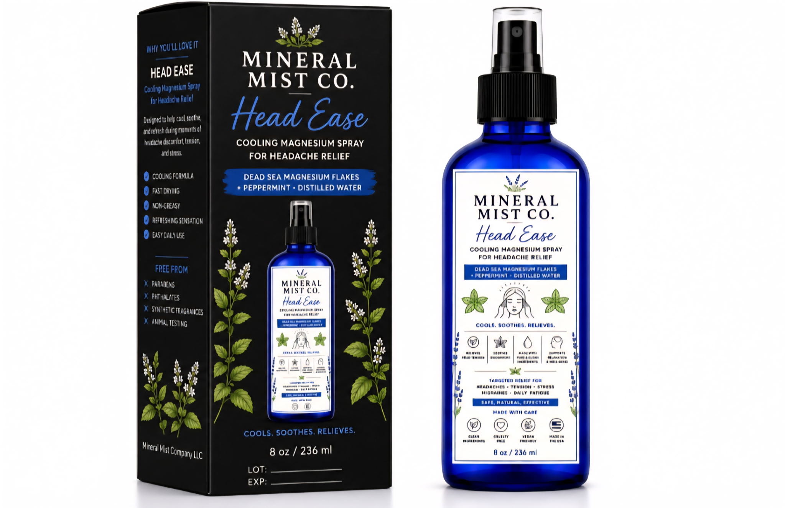
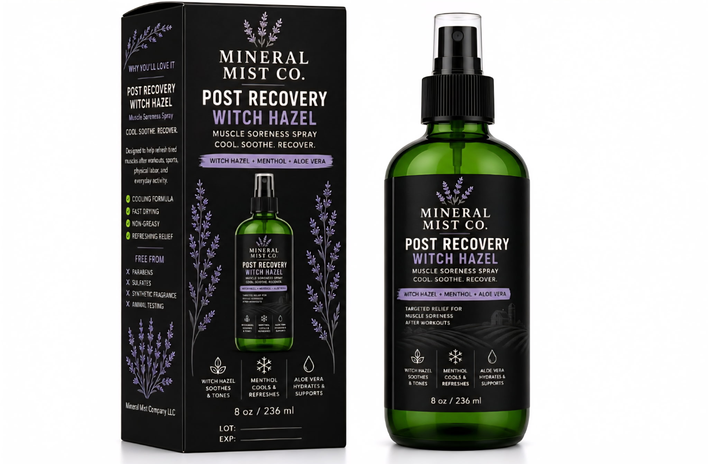
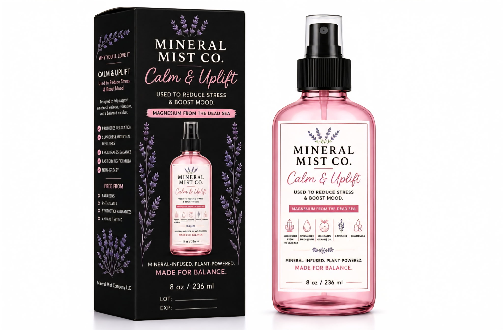

Everyday refresh
Pure Mineral Mist
A clean daily spray for face, body, and reset moments when skin needs a light mineral refresh.
Shop nowNatural. Pure. Effective.
Mineral-rich spray mists made for quick daily rituals, from a morning reset to post-workout recovery.

The collection
Everyday refresh
A clean daily spray for face, body, and reset moments when skin needs a light mineral refresh.
Shop now
Peppermint comfort
A cooling mist for pressure-heavy days, screen breaks, and a crisp sensory reset.
Shop now
Witch hazel blend
Made for after movement, long days, or any moment that calls for a grounded body refresh.
Shop now
Rose water softness
A soft floral mist for slower mornings, evening wind-downs, and mood-lifting pauses.
Shop now
Mist ritual
Mineral Mist is built for the moments that usually pass unnoticed: the first breath after a commute, a reset between meetings, a post-workout cooldown, or a quiet minute before sleep.
Mineral-first body care
Each Mineral Mist spray is designed to fit naturally into the rhythm of real life: refreshing the skin, easing into recovery, resetting the senses, and bringing a clean mineral ritual wherever the day goes.
Get product updates, restock notes, and mineral ritual inspiration from Mineral Mist.